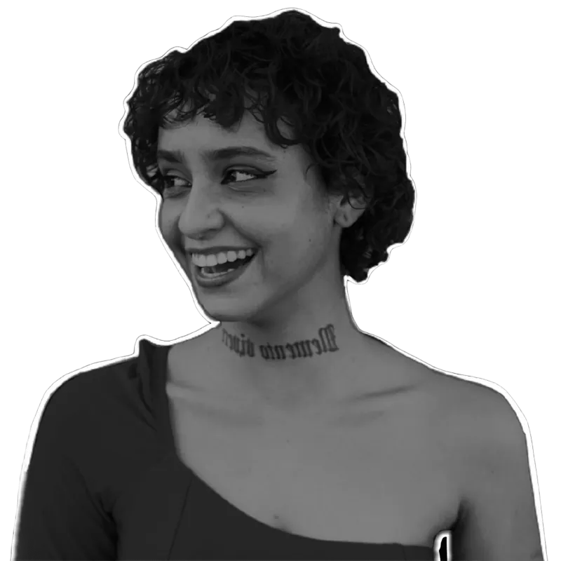
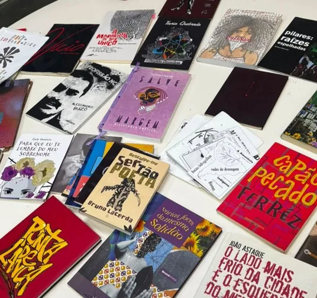
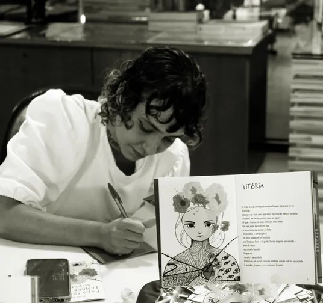
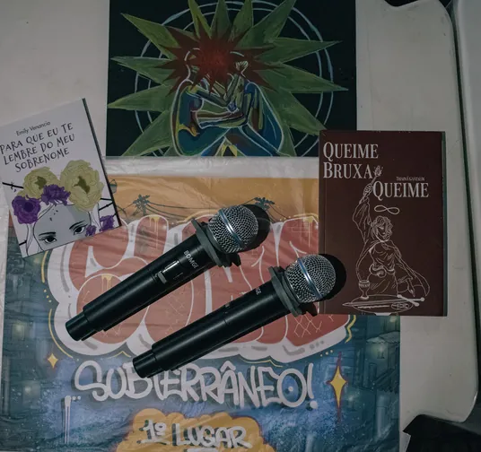
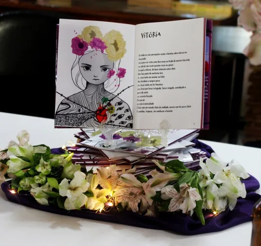

Olá, eu sou Emily Venancio :)
Poetisa, slammer, artista e arteira! Nascida e criada em Marília,
no interior profundo do estado de São Paulo. Estou no meio artístico desde que me lembro,
reconheço as tintas e os lápis desde quando me entendo por gente. Aos 14 anos conheci o teatro e, aos 16,
adotei o vulgo Coala na minha primeira participação em um campeonato de poesia falada. Hoje, aos 19, transito
entre todas as formas de arte que posso, experenciando cada vez mais e com mais intensidade a mágica que é ser artista.
Seja bem-vinda(o) ao meu portfólio!





Escrita Criativa
Publicado em 2025, "Para que eu te lembre do meu sobrenome"
é minha primeira obra literária: um livreto que reúne poesias de SLAM.
"Este livro é um chamado à crítica social e à possibilidade de reinventar-se pela arte.
Mergulhe nessas linhas, no mais íntimo da minha escrita, e descubra que resistir através da poesia
é revolução".
Poesie-se!
Ações Culturais
Aqui reúno os palcos, rodas, batalhas de poesia falada e espaços formativos por onde circulei levando a minha arte. Entre competições como slammer e trocas como oficineira, cada evento marca um território ocupado e uma história compartilhada.
Oficina de Fan-Zine 2026
Ministrada na biblioteca municipal de Marília, durante o programa cultural "Janela Literaria".
Intervenções Poéticas 2026
Realizadas a convite dos coletivos NOSOTRAS e POVOADA, na escola Reiko e durante uma iniciativa cultutual contra a cultura do estupro.
Lançamento Livreto
Relançamento do livreto no SLAM mais antigo da cidade (SLAM SUBTERRANEO).
Participações Slam
Participações como slammer em competições de poesia falada promovidas por: Semana do HIHHOP, Slam Na casa e Slam Transbordar.
Arte & Bastidores
Confira meus trabalhos e vivências no set de filmagem. Um registro da minha atuação como assistente de arte e atriz em produções audiovisuais independentes, desde a concepção estética em projetos de cinema de guerrilha até a execução visual de curtas-metragens.
Web Design
Mockup do projeto 'Apresente.AI', uma ia generativa de imagens e textos para estudantes.
Jogo matematica computacional.
GitHub